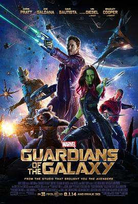

银河护卫队 / Guardians of the Galaxy
又名：银河守护队(港) / 星际异攻队(台) / 银河守卫者 / 银河守护者 / Full Tilt / G.O.T.G.
简直太棒了，哭哭笑笑看了这一路，把所有的感知全都尝了一遍
作品信息
| 导演 | 詹姆斯·古恩 |
| 编剧 | 詹姆斯·古恩 / 妮可·帕尔曼 |
| 主演 | 克里斯·帕拉特 / 佐伊·索尔达娜 / 戴夫·巴蒂斯塔 / 范·迪塞尔 / 布莱德利·库珀 / 李·佩斯 / 迈克尔·鲁克 / 凯伦·吉兰 / 杰曼·翰苏 / 约翰·C·赖利 / 彼得·塞拉菲诺威茨 / 格伦·克洛斯 / 本尼西奥·德尔·托罗 / 劳拉·哈德克 / 肖恩·古恩 / 斯坦·李 / 乔什·布洛林 / 怀亚特·奥莱夫 / 克里斯托弗·法里班克 / 格雷格·亨利 / 贾妮斯·埃亨 |
| 类型 | 动作 / 科幻 / 冒险 |
| 制片国家/地区 | 美国 |
| 语言 | 英语 |
| 上映日期 | 2014-10-10(中国大陆) / 2014-07-21(洛杉矶首映) / 2014-08-01(美国) |
| 片长 | 121分钟 |
| IMDb | tt2015381 |
最后一次看到是 2026-08-12T21:13:00+08:00 · 豆瓣原页